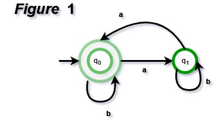
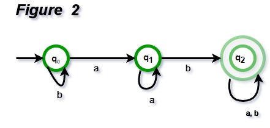
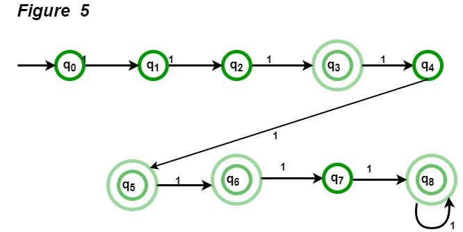
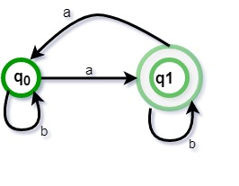

All strings with an even number of a's will be accepted by the above automata. For zero a's, it will be in the final state, q0. It will travel from q0 to q1 for one 'a' and the string will be rejected. It will go from q0 to q1 for the first 'a' and q1 to q0 for the second 'a' for two a's at any place. As a result, it will accept any string with an even number of a's.
 The above automaton will accept any string with the substring 'ab'. For b's, the automata will remain in the initial state q0. It will go to q1 after reading 'a' and remain there for the rest of the 'a'. If 'b' is read, it will proceed to q2. If the string reaches q2, it has read 'ab' as a substring.
NOTE: If we want to create a finite automata with 3n+1 a's, we can utilize the same automata with q1 as the end state instead of q0. k states are necessary to create a finite automaton with language akn | n >= 0. In our example, k = 3 was chosen.

All binary numbers divisible by three will be accepted by the above automata. For 1001, the automata will go from q0 to q1, then from q1 to q2, then from q2 to q1, and lastly from q2 to q0, and thus accepted. For 0111, the automata will travel from q0 to q0, then q0 to q1, then q1 to q0, and ultimately q0 to q1.

Question : What will be the minimum number of states for strings with odd number of a’s?
Solution: The regular expression for odd number of a is b*ab*(ab*ab*)* and corresponding automata is given in Figure 6 and minimum number of states are 2.
